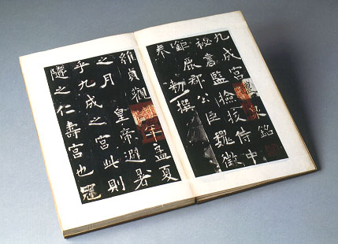

義助慰安婦 —— 李敖百件珍藏義賣藝術品（第25件） 品 名：B2. 歐陽詢「九成宮醴泉銘」舊拓 預估價：6 萬 成交價：10 萬 說 明： 古代寫毛筆最好、最盛行的時代是唐朝，此乃唐代最有名的書法家歐陽詢所寫「九成宮醴泉銘」拓本。歐陽詢長得很醜，但他到處看古碑，研究古碑的字，因而寫了一手極美的字。 
古代寫毛筆最好、最盛行的時代是唐朝，此乃唐代最有名的書法家歐陽詢所寫「九成宮醴泉銘」拓本。歐陽詢長得很醜，但他到處看古碑，研究古碑的字，因而寫了一手極美的字。